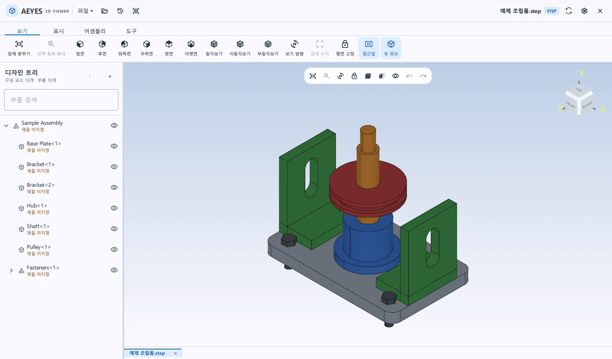
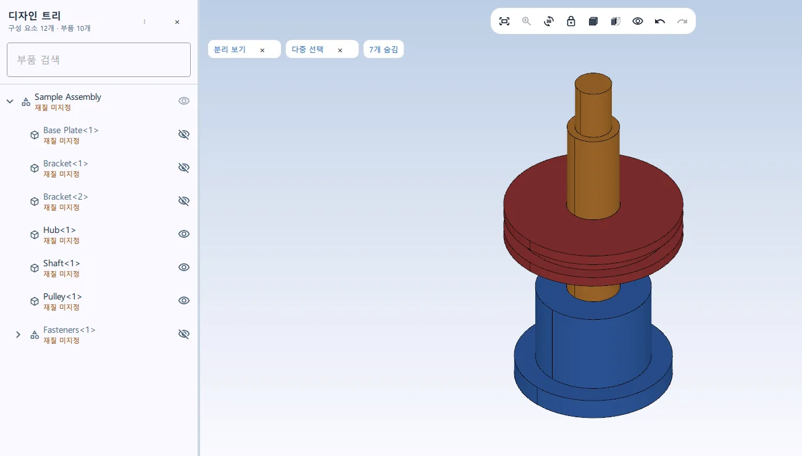
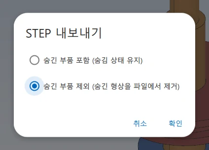
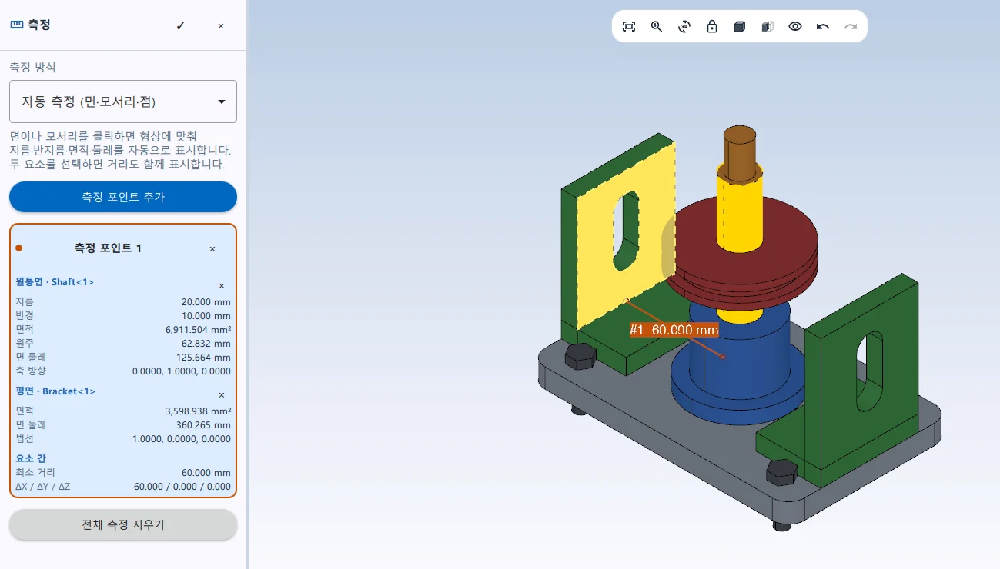
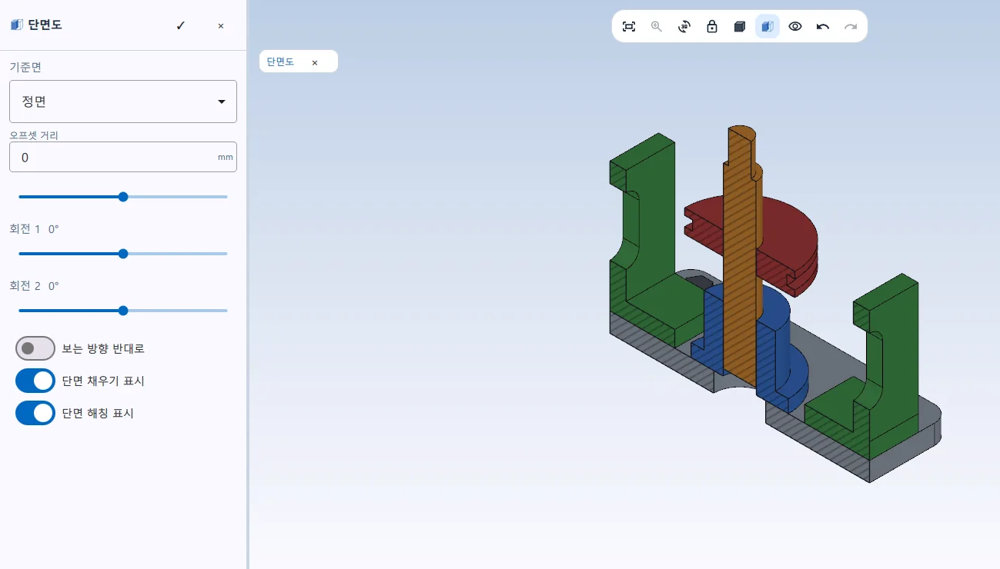
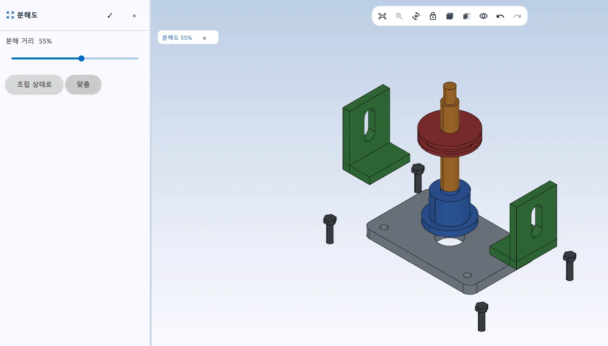
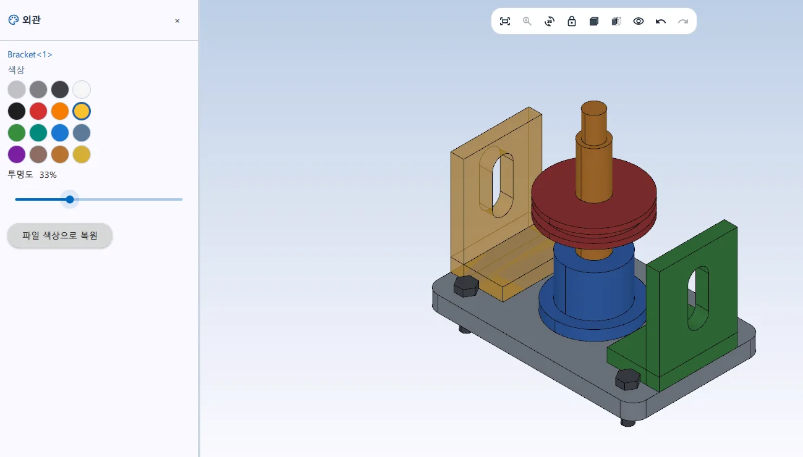
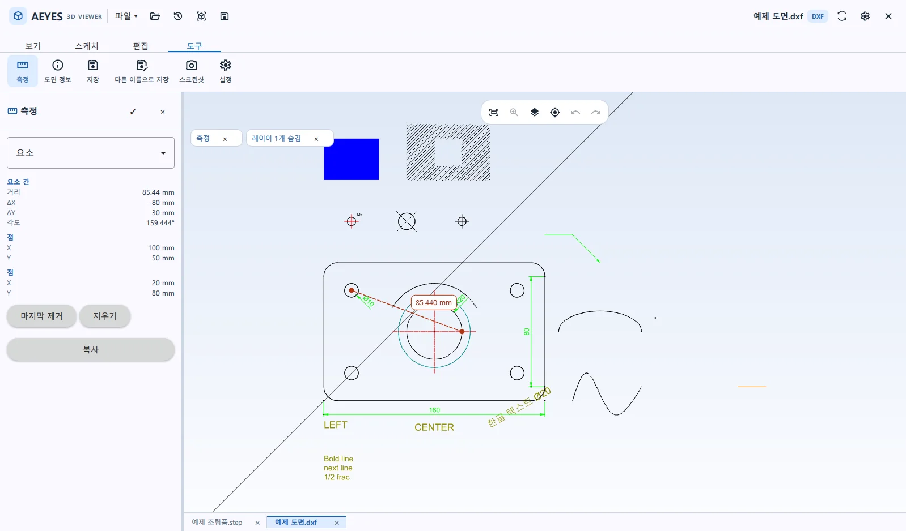

WINDOWS 3D CAD 뷰어
설계 프로그램 없이 여는
3D CAD 뷰어.
AEYES 3D Viewer는 STEP(STP)·IGES·STL 모델과 DXF·DWG 도면을 바로 여는 Windows용 3D CAD 뷰어입니다. 돌려 보고, 재고, 필요한 부품만 골라 내보냅니다. 설계는 하지 않지만 도면은 봐야 하는 팀을 위해 만들었습니다.

01 / FOR WHOM
설계는 하지 않아도,
3D 도면은 매일 봐야 하는 팀에게.
받은 STEP 파일을 확인하려고 설계 프로그램을 띄울 필요가 없습니다. PC에 설치해 쓰는 캐드 뷰어라, 도면 파일을 인터넷에 올리지 않습니다.
-
구매 · 영업
받은 3D 파일을 열어 형상과 크기를 확인하고, 견적이나 발주 전에 치수를 재 봅니다.
-
생산 · 조립
분해도와 단면도로 조립 구조를 살펴보고, 필요한 부품만 따로 띄워 봅니다.
-
품질 · 검사
면과 모서리를 클릭해 지름, 거리, 면적을 확인합니다.
-
가공 · 협력사
어셈블리에서 맡은 부품만 골라 STEP으로 내보내거나, 받은 파일들을 하나로 합칩니다.
02 / STRENGTHS
STEP 파일을 가볍게 열고, 쉽게 확인합니다.
뷰어에 필요한 기능을 보기·표시·어셈블리·도구 네 개의 탭에 모았습니다.
-
01
빠른 실행
설계 프로그램을 띄우지 않고 뷰어만 가볍게 실행해 파일을 바로 확인합니다.
-
02
어렵지 않은 화면
자주 쓰는 명령이 탭마다 한 줄로 놓여 있습니다. 설계 프로그램에 익숙하지 않아도 금방 찾습니다.
-
03
클릭으로 하는 측정
면이나 모서리를 클릭하면 지름·반지름·면적·둘레를 자동으로 표시하고, 두 요소를 고르면 거리도 함께 보여 줍니다.
-
04
색상 · 투명도 편집
부품마다 색상과 투명도를 바꿔 구분하기 쉽게 만듭니다. 원래 파일 색상으로 되돌릴 수 있습니다.
-
05
다양한 보기 기능
단면도, 분해도, 숨기기와 분리, 표준 뷰, 은선 제거와 와이어프레임, 바운딩 박스, 물성치를 제공합니다.
-
06
DXF · DWG 도면도 함께
DXF와 DWG 도면을 열어 레이어별로 보고, 치수를 재고, 간단한 편집까지 합니다.
03 / STEP TOOLS
받은 STEP 파일을,
필요한 대로 다시 묶습니다.
설계 프로그램 없이도 어셈블리에서 부품을 골라내고, 여러 파일을 하나로 합칩니다.
SELECTIVE EXPORT
필요한 부품만 골라
STEP으로 내보내기.
어셈블리 전체를 넘기지 않아도 됩니다. 남길 부품만 화면에 두고 내보내면, 보이는 부품만 담긴 STEP 파일이 만들어집니다. 어셈블리에서 일부 부품만 추출해 협력사에 보낼 때 씁니다.
- 디자인 트리에서 남길 부품을 고르고 ‘분리’
- 도구 탭의 ‘STEP 내보내기’ 실행
- ‘숨긴 부품 제외’를 선택하고 저장


STEP MERGE
여러 STEP 파일을
한 파일로 합치기.
열어 둔 STEP 모델에 다른 STEP 파일을 삽입해 하나의 어셈블리로 합치고(병합), STEP 파일로 저장합니다. 삽입한 파일은 디자인 트리에 파일 이름으로 묶여 들어갑니다.
삽입한 파일은 원래 좌표 그대로 놓입니다. 좌표계가 서로 맞춰진 파일을 합칠 때 쓰세요.
04 / SCREENS
측정, 단면도, 분해도를 화면으로 확인하세요.
모두 실제 앱 화면이며, 앱에 들어 있는 예제 파일로 찍었습니다. 눌러서 크게 볼 수 있습니다.





05 / PRICING
14일 무료 체험 후, 한 번만 구매합니다.
14일 동안 정식판과 같은 기능을 써 본 뒤, 앱 안에서 라이선스를 신청합니다.
300,000원부가세 별도
부가세 포함 330,000원. 프로모션 기간이 끝나면 가격이 오를 수 있습니다.
- PC 1대에서 기간 제한 없이 사용
- 새 기능이 추가되면 자동 업데이트로 계속 받습니다
- 신청한 PC 1대에 귀속되며, 같은 PC에는 다시 설치할 수 있습니다
- 한 번 온라인 확인을 받으면 14일 동안 오프라인 사용
구매는 앱의 파일 메뉴 → 라이선스에서 신청하면, 결제 확인 후 승인됩니다.
라이선스는 신청한 PC(Android 판은 신청한 Android 기기) 1대에 귀속됩니다. 기기를 바꾸면 라이선스를 옮길 수 없어 다시 구매해야 하니, 실제로 사용할 기기에서 신청해 주세요.
라이선스 조건은 소프트웨어 사용권 계약을 따릅니다.
06 / DOWNLOAD
AEYES 3D Viewer 체험판 다운로드.
설치한 뒤에는 앱이 새 버전을 스스로 내려받아 다음 실행 때 적용합니다.
Windows용 AEYES 3D Viewer
설치 파일을 내려받아 실행하세요. 처음 실행할 때 이메일을 확인하면 14일 체험이 시작됩니다.
체험판 다운로드 (113MB)- 버전
- 1.4.5
- 운영체제
- Windows 10 · 11 (64비트)
- 파일
- Aeyes3DViewer-1.4.5-initial-setup-unsigned.exe
- SHA-256
- b3af1eb79ea276242f7c2a4337747440a419d7d006191ef9db0aace2595d1001
설치 파일은 아직 코드 서명 전이라 Windows가 확인 창을 띄울 수 있습니다. 이 페이지에서 받은 파일인지, SHA-256 값이 위와 같은지 확인하고 진행하세요.
- 시작 메뉴에서 ‘PowerShell’을 찾아 엽니다.
- 아래 명령을 복사해 붙여 넣고 Enter를 누릅니다.
(Get-FileHash "$HOME\Downloads\Aeyes3DViewer-1.4.5-initial-setup-unsigned.exe").Hash -eq "b3af1eb79ea276242f7c2a4337747440a419d7d006191ef9db0aace2595d1001" - True가 나오면 이 페이지의 파일과 같은 파일입니다. False가 나오면 설치하지 말고 다시 내려받거나 문의해 주세요.
- 파일을 다운로드 폴더가 아닌 곳에 받았다면, 명령에서 따옴표 안의 경로를 그 위치로 바꿔 주세요.
Android 태블릿 · 폰
Android 태블릿과 폰에서 쓰는 AEYES 3D Viewer도 준비하고 있습니다. Android 앱은 태블릿 화면에 최적화되어 있습니다. Android 판은 라이선스가 Windows 판과 별도이고, DWG 열기 등 일부 기능이 다릅니다.
APK 다운로드 준비 중먼저 받아 보고 싶으시면 메일로 문의해 주세요.
07 / FAQ
사용 환경과 자주 묻는 질문.
사용 환경
- 운영체제
- Windows 10 · 11 (64비트)
- 3D 파일
- STEP · IGES · BREP · STL .step .stp .iges .igs .brep .stl
- 2D 파일
- DXF · DWG DWG는 DXF로 변환해 열고, 저장은 DXF로 합니다
- 화면 언어
- 한국어 · English
- 라이선스
- PC 1대 · 영구 라이선스 신청한 기기에 귀속 · 기기를 바꾸면 다시 구매
- 업데이트
- 자동 업데이트
자주 묻는 질문
어떤 파일을 열 수 있나요?
3D 모델은 STEP 파일(.step, .stp — 스텝 파일, STP 파일이라고도 합니다)과 IGES(.iges, .igs), BREP, STL 파일을, 2D 도면은 DXF와 DWG 파일을 엽니다. DWG 도면은 DXF로 변환해서 열고, 고친 내용은 DXF로 저장합니다.
STEP 파일과 STP 파일은 다른가요?
같은 형식입니다. STEP은 설계 프로그램 종류와 관계없이 3D 모델을 주고받으려고 만든 표준 형식(ISO 10303)이고, 파일 확장자가 .step 또는 .stp입니다. AEYES 3D Viewer는 두 확장자를 모두 엽니다.
설계 프로그램이 따로 있어야 하나요?
필요 없습니다. AEYES 3D Viewer는 STEP 뷰어(STP 뷰어)와 DXF·DWG 뷰어를 한 프로그램에 담았습니다. 이 프로그램만 설치하면 3D 모델과 도면을 열고, 재고, 내보낼 수 있습니다.
STEP 파일에서 치수를 잴 수 있나요?
네. 측정 도구에서 면이나 모서리를 클릭하면 지름·반지름·면적·둘레가 표시되고, 두 요소를 고르면 그 사이의 거리도 함께 표시됩니다. DXF·DWG 도면에서도 거리와 각도를 잴 수 있습니다.
선택한 부품만 STEP으로 내보낼 수 있나요?
네. 내보내지 않을 부품을 숨기거나 남길 부품만 분리한 뒤, STEP 내보내기에서 ‘숨긴 부품 제외’를 고르면 보이는 부품만 파일에 담깁니다.
여러 STEP 파일을 하나로 합칠 수 있나요?
네. 열어 둔 STEP 모델에 ‘STEP 삽입’으로 다른 STEP 파일을 더한 뒤 저장하면 한 파일로 합쳐집니다(STEP 병합). 삽입한 파일은 원래 좌표 그대로 놓이므로, 좌표계가 서로 맞춰진 파일을 합칠 때 쓰세요.
가격은 얼마인가요?
영구 라이선스는 PC 1대에 300,000원(부가세 별도)입니다. 출시 프로모션 가격이며, 프로모션 기간이 끝나면 오를 수 있습니다. 구매 전에 14일 동안 무료로 써 볼 수 있습니다.
체험판과 정식판은 무엇이 다른가요?
기능은 같습니다. 체험은 PC 1대당 한 번, 14일 동안 쓸 수 있고, 그 뒤에는 라이선스가 필요합니다. 프로그램을 지우고 다시 설치해도 체험 기간은 다시 시작되지 않습니다.
인터넷 연결이 필요한가요?
체험을 시작하거나 라이선스를 신청·확인할 때 필요합니다. 한 번 온라인 확인을 받으면 14일 동안은 인터넷 없이 쓸 수 있고, 그 뒤에는 다시 확인을 받아야 합니다.
열어 본 파일이 외부로 전송되나요?
아닙니다. 3D 모델과 도면을 보는 기능은 파일을 회사로 보내지 않습니다. 회사는 체험과 라이선스 확인에 필요한 정보(이메일, PC 식별값 등)만 처리합니다.
개인정보처리방침PC나 기기를 바꾸면 라이선스는 어떻게 되나요?
라이선스는 신청한 PC(Android 판은 신청한 Android 기기) 1대에 귀속되어 다른 기기로 옮길 수 없습니다. 기기를 바꾸면 새 기기에서 다시 구매해야 하니, 실제로 사용할 기기에서 신청해 주세요. 같은 PC에 다시 설치하는 것은 그대로 됩니다.
소프트웨어 사용권 계약업데이트는 어떻게 받나요?
앱이 작업하는 동안 새 버전을 내려받고, 다시 시작할 때 적용합니다. 영구 라이선스는 이렇게 추가되는 기능을 계속 받습니다.
설치할 때 Windows 확인 창이 뜨는데 괜찮나요?
설치 파일에 아직 코드 서명이 없어서 Windows가 확인 창을 띄울 수 있습니다. 이 페이지의 다운로드 버튼으로 받은 파일인지 확인하세요. 파일의 SHA-256 값을 다운로드 항목에 적힌 값과 비교하면 파일이 바뀌지 않았는지 확인할 수 있습니다. 확인 방법은 다운로드 항목에 적어 두었습니다.
CONTACT
도입이나 구매가
궁금하신가요?
여러 대에 설치하려는 경우, 필요한 기능이 있는 경우, 체험 중 막히는 부분이 있는 경우 메일로 알려 주세요.
시작하는 순서
체험부터 구매까지 앱 안에서 이어집니다.
- 체험판 설치
설치 파일을 내려받아 실행하고, 이메일을 확인해 14일 체험을 시작합니다.
- 라이선스 신청
실제로 사용할 PC에서, 앱의 파일 메뉴 → 라이선스에 회사와 담당자 정보를 적어 신청합니다. 라이선스는 신청한 PC에 귀속됩니다.
- 결제 확인 후 승인
결제가 확인되면 라이선스가 승인되고, 체험판이 그대로 정식판이 됩니다.